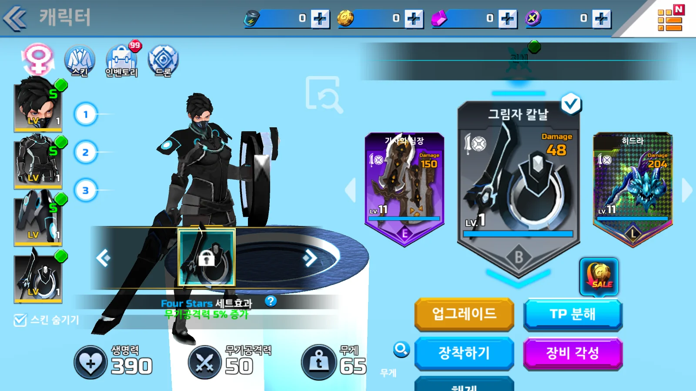
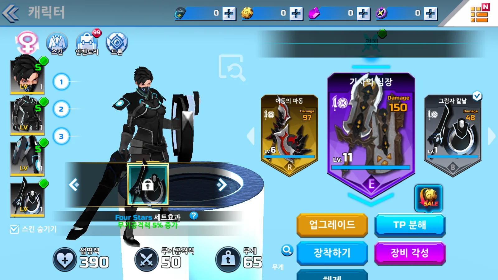
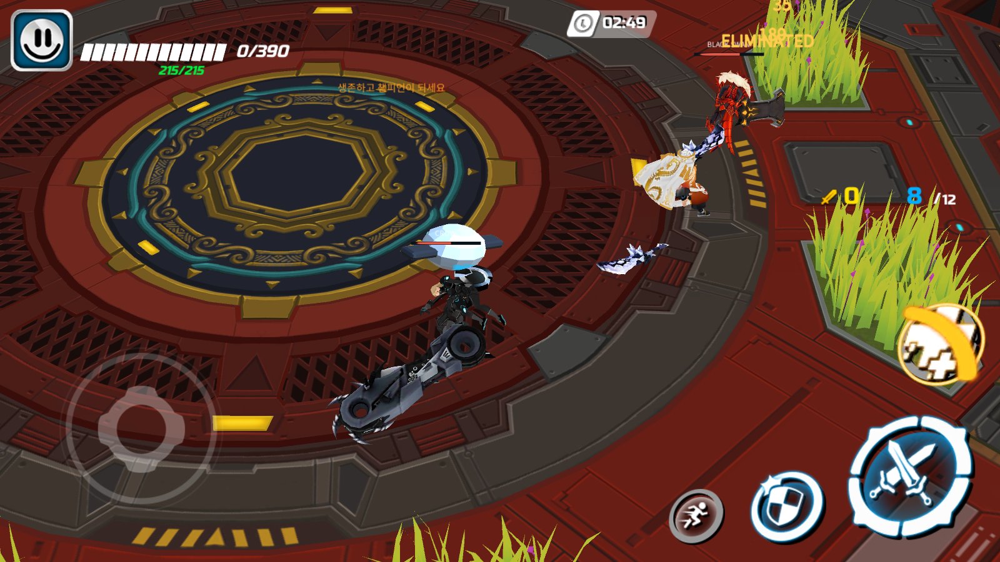

Tracefolio REPORTS & ISSUES
Tracefolio REPORTS & ISSUESOVERDOX 원본30×350 장비 버튼 입력 영역과 로딩 뒤 자동 전투 진입 복구
부분 완료이전·다음 버튼을 원본 콜라이더30×350으로 복구하고 자동 전투 요청을 로딩 완료 뒤 전달했습니다. Build28에서 같은 좌표 클릭·여성 전투와20초 자동 흐름을 확인했습니다.
작업 결과
원본의 긴 장비 버튼 입력 영역을 복구해 화살표 왼쪽·위쪽에서도 열람이 이동합니다. 같은1282×752 창의(644,381)을 눌렀을 때 Build27은 그대로였고 Build28은3→2로 이동했습니다. 실제 장착10140·공격력50은 유지됩니다. 그림의 배치·depth 수정이 아니라 투명 입력 영역 복구입니다.


여성 전환→로비 Battle→전투→Esc 로비 복귀도 확인했습니다. 아래 캡처는 진입 직후 생존 시점이 아니라0HP 관찰 시점입니다.

변경 내용
적용 내용
원본 main81 level3의 BoxCollider60978·60999는 enabled=true,trigger=true,중심0·크기30×350입니다. 자식 화살표는20×46이며 이전x=-10·다음x=10입니다. 기존 Wire가 자식 그림 크기만 부모 Rect에 적용해 입력 영역을 줄였습니다. 버튼 중심의 레이캐스트·클릭 연결은 원래 정상이며 가림으로 단정했던 문제가 아닙니다. 두 부모 크기만 수정하고 위치·자식·원본 파일은 보존했습니다. 기존 초기 연결·표시 수정 흐름에도 적용했습니다.
flowchart LR A[원본 내장 BoxCollider] --> B[30x350과 중심0 확인] C[기존 자식 그림 추정20x46] --> D[화살표 일부와 긴 영역 미입력] B --> E[두 투명 버튼 Rect만 저장] E --> F[같은 좌표의 실제 클릭] F --> G[열람 이동과 장착 값 유지]
RestoredEquipmentInputBuilder.cs 핵심 적용 메서드 전체:
private static void RestoreEquipmentNavigationHitAreas(RestoredUiDocument document)
{
// main81 level3의 BoxCollider60978·60999를 내장 타입 트리로 읽어 확인했다.
// 기존 Wire는 자식 그림20×46만 사용해 긴 입력 영역을 축소했다. 자식 화살표 위치는 변경하지 않는다.
foreach (int sourceId in new[] { 34185, 36471 })
{
var rect = document.Find(sourceId);
if (rect.pivot != new Vector2(.5f, .5f))
{
throw new InvalidOperationException("원본 중심 입력 영역과 다른 pivot입니다: " + sourceId);
}
rect.sizeDelta = new Vector2(30, 350);
EditorUtility.SetDirty(rect);
}
Debug.Log("OVERDOX_EQUIPMENT_HIT_AREAS_RESTORED sourceIds=34185,36471 size=30x350 center=0,0");
}
저장·재열기 메뉴 전체:
public static void RestoreNativeEquipmentButtonHitAreas()
{
if (EditorApplication.isPlaying || SceneManager.GetActiveScene().isDirty)
{
throw new InvalidOperationException("현재 씬을 저장하고 재생을 종료하세요.");
}
var setup = EditorSceneManager.GetSceneManagerSetup();
try
{
var scene = EditorSceneManager.OpenScene("Assets/Scenes/OverdoxLobby.unity", OpenSceneMode.Single);
var controller = UnityEngine.Object.FindFirstObjectByType<RestoredLobbyController>();
RestoreEquipmentNavigationHitAreas(controller.GetComponent<RestoredUiDocument>());
EditorSceneManager.SaveScene(scene);
}
finally
{
EditorSceneManager.RestoreSceneManagerSetup(setup);
}
}
검증
ArenaSession.Start가 비동기 씬 활성화 완료보다 먼저 실행돼, 로비의 StartMatch→EnterArena 요청이 _loading=true에 거부됐습니다. StartMatchAfterLoading은 Flow의 Splash·Loading이 끝난 뒤 기존 명령을 호출합니다. 씬 파괴 시 세션 코루틴도 종료되며 영구 Update·별도 타이머·중복 세션은 추가하지 않습니다.
flowchart LR
A[씬 활성화와 Session Start] --> B{Flow가 Splash 또는 Loading}
B -->|예| C[다음 프레임 대기]
C --> B
B -->|아니오| D[기존 StartMatch]
D --> E{현재 Lobby인가}
E -->|예| F[선택 보존과 Arena 로딩]
E -->|아니오| G[경기 시작]
ArenaSession.cs 초기화와 로딩 대기 메서드 전체:
private void Start()
{
RestoreLoadout();
SpawnRoster();
hud.Bind(this);
arenaCamera.target = Player.transform;
Player.transform.rotation = arenaCamera.nativeLobbyPose
? new Quaternion(0, -.576214f, 0, .8172988f) * Quaternion.Euler(0, 180, 0) : Quaternion.Euler(0, 180, 0);
if (Array.IndexOf(Environment.GetCommandLineArgs(), "-catalog-review") >= 0) { StartCoroutine(ReviewCatalog()); }
else if (IsAutoplay || (GameFlowController.Instance != null && GameFlowController.Instance.IsEnteringArena))
{
StartCoroutine(StartMatchAfterLoading());
}
}
private IEnumerator StartMatchAfterLoading()
{
// ArenaSession.Start는 LoadSceneAsync 완료보다 먼저 실행될 수 있다.
// 준비가 끝날 때까지 이 세션에서 기다리고, 씬이 사라지면 코루틴도 함께 종료한다.
var flow = GameFlowController.Instance;
while (flow != null && (flow.Phase == GameFlowPhase.Splash || flow.Phase == GameFlowPhase.Loading))
{
yield return null;
}
StartMatch();
}
Build28은 우회 옵션 없이 Splash→Lobby준비→Arena로딩→Arena준비→1라운드 순서를 확인했습니다. -duration20으로20.00948초 후 완료 JSON·OVERDOX_SOAK_COMPLETE·실제 프로세스 종료를 확인했습니다. 짧은 흐름 검증이며10시간 결과가 아닙니다.
자동 진입 로그 · 짧은 완료 · 수동 입력·복귀 로그 · 수동 판정
남은 사항
전체119장비 실제 능력·남녀 리깅 전수,추가 UI depth·NEW99·업그레이드·TP 템플릿,카메라·FX와 새 Build28의10시간은 미완료입니다. 실제 OS드래그는 시작·종료 로그와 포커스 변화가 없어 미확인입니다. 이전 EventSystem 이벤트 재생 결과와 구분합니다. 버튼 크기 복구를 전체 조작감 동일성으로 판정하지 않습니다. 기존 원작 FX 누락 스크립트 경고1건이 남습니다.
Build27 고정 장시간 프로세스는 유지하며 기존150파일 해시가 그대로입니다. 이 목록은 시작 전 Evidence2개를 포함하고 새 기록은 별도 폴더에 저장합니다. 새 Build28은 오래된 Evidence를 제외한148개 빌드 파일로 고정했습니다. 두 빌드 결과를 섞지 않습니다.
원본 콜라이더 · 초기 레이캐스트 · 아바타·Excel·씬 보존 · Build28 해시 · Build27 고정 보존 · 진행 관찰
런타임 전체 · 입력 연결 전체 · 개발 문서. 씬 diff는 두 m_SizeDelta만 변경했습니다. 현재 남녀 프리팹·라이브러리·비주얼 코드4파일과 수식 XLSX SHA256이 같습니다. 실제 Affinity에서 전후2개 AF 저장·닫기·재열기 dirty=false와 WebP 약137KB·132KB를 확인했습니다. 여성 전투 PNG 추가 압축은 미완료입니다. 기존6개 Affinity 문서는 보존하고 작업2개는 닫았습니다.
샘플 c7b40e5의 함수·XML·SceneEntry를 다시 확인했습니다. 원작 특정ID·치수 구현은 샘플 환류를 보류하며 로딩 준비 후 명령 원칙은 기존 SceneEntry와 중복됩니다. 전역 지침 변경 없음, 프로젝트 지침에 원본 클릭 크기와 로딩 준비 순서를 통합했습니다.
대화 기록: 사용자는 중단 전까지 복원을 지속하고 남녀 아바타·리깅 변경을 참고해 UI depth를 점검하라고 요청했습니다(시각 미기록). 이전 회차에서 입력 미확인과 자동 진입 문제를 보고했고, 이번 회차는 실제 원본 콜라이더와 실행 결과를 근거로 수정했습니다. 원본 그림은 변경하지 않았습니다.
자동 진입 수정 전 화면은 추가 숨김 기준 실행에서 조작 가능한 창이 반환되지 않아 촬영하지 못했습니다. 해당 흐름은 실제 로비 정지 관찰 로그와 수정 후 순서·완료 로그로 대조했으며 자동 흐름의 이미지 전후 비교 완료로 표시하지 않습니다. 입력 버튼의 전후 이미지는 실제 촬영했습니다. 추가 기준 프로세스만 정리했습니다.
작업 시간
- 제안 시간: 2026-11-13 23:12:32 KST 시작,첫 수정·실행 확인30~60분 예상. 전체 복원 완료 예상과 구분합니다.
- 실제로 완료된 시간: 입력 영역 저장23:18:22,Windows 빌드 성공 확인23:20경(DLL23:20:34·빌드 기록 파일23:20:40),20초 자동 실행 완료23:21:51.342,수동 여성 전투 뒤 로비 복귀23:24:53.475 KST. 핵심 수동 복귀까지12분21.5초. 문서·공개 게시 종료는 별도 기록합니다. 설치·Build28 10시간 완료를 포함하지 않습니다.
- XERJ: 미사용 — XERJ 연결·검색 없음. 보존된 main81 level3의 내장 BoxCollider 타입과 실제 EventSystem·Windows 입력·로그를 대조했습니다. 일반 UnityPy 분석이며 REA 출력으로 표시하지 않았습니다.